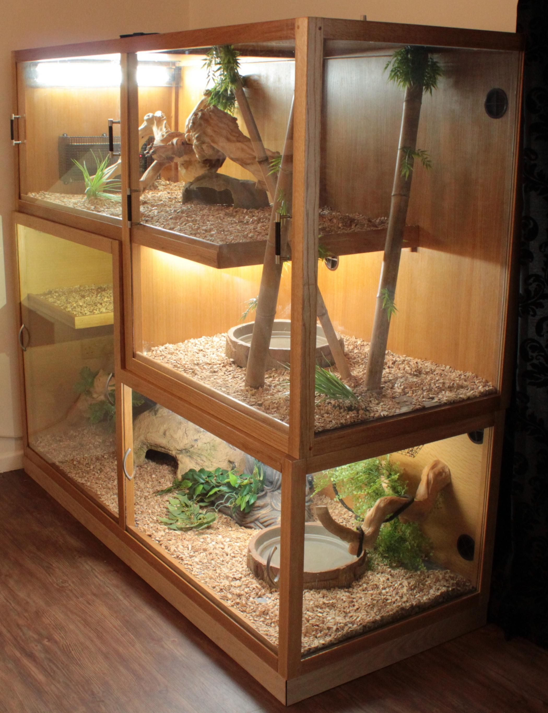
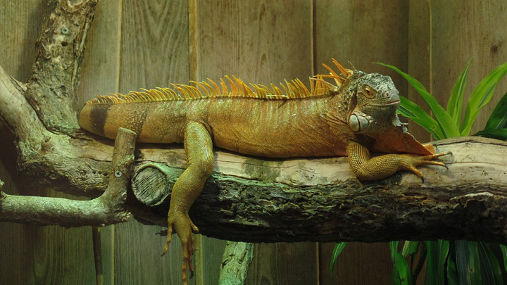

Terrarios
Cuando nos disponemos a tener una iguana es muy importante construir un buen terrario ya que de ello dependerá la salud de nuestro reptil.
Las iguanas no son animales muy grandes en un inicio, pero pueden llegar a medir hasta 2m, por lo que es recomendable construir un terrario grande desde un inicio.
Como siempre decimos, cuanto más grande sea el terrario, mejor.
Si quieres que tu mascota viva y se desarrolle bien necesitas un terrario de 3 metros de largo por 2 de alto por 1 de profundidad como mínimo.

Este debe ser más alto que largo y contar con diferentes ramas y superficies por donde la iguana pueda trepar ya que es un animal arborícola, que pasa mucho tiempo sobre las ramas de los árboles en su hábitat natural.
¡Construye tu propio terrario!
1. Materiales
Puedes hacer el terrario con vidrio y silicona, incluso combinando plástico y vidrio para hacer algunos orificios y mantenerlo ventilado.
También puedes construirlo de madera que debe incluir una barnizado con sustancias no tóxicas para evitar el envenenamiento de tu iguana.
2. Decoración
Ramas o troncos: Las ramas son esenciales para las iguanas, ya que estos reptiles son trepadores por naturaleza, muy pocas veces se mantienen en el suelo(sólo para comer) y utilizan los troncos para subir y tomar sol. Por lo que, es bueno que busques en el bosque más cercano unas que se adecuen al espacio.
Algo importante a considerar que es que debes cepillarlas y lavarlas para después secarlas y fijarlas dentro del iguanario para evitar que se caigan en la primera oportunidad.
Plantas: Estas cumplen un fin estético, sin embargo, dan un aspecto selvático, que a tu iguana le encantará. Nuestra recomendación es que compres plantas artificiales en la tienda de mascotas de tu preferencia, y así evitarás que se echen a perder rápidamente.
Piedras: Son muy similares a las ramas, ya que sirven para que tome el sol, con la diferencia de que proporcionan refugio y sirven para que tu reptil pueda afilar sus uñas. Es decir, cumplen con fines decorativos, pero también son necesarias.
Agua: Puedes incluir un espacio para que corra agua dentro del acuario o simplemente una especie de piscina. Sé ve bien y sirve para que el espacio cuente con humedad.

3. Accesorios vitales
Sustratos: Este es el recubrimiento que irá en el suelo, como lo arena en los gatos. Existen muchas variedades como el papel absorbente, papel de estraza, pasto artificial. Lo mejor para ti, es lo que consideres lo más sencillo de limpiar, que sea libre de que lo ingiera sin peligro, y que absorba fácilmente la suciedad.
Calefacción: La temperatura, como ya lo mencione es esencial en las iguanas, debe mantenerse entre 28 y 35 grados centígrados por la noche y 18 a 22 grados por las noches. Lo más conveniente es que instales unas bombillas generadoras de calor para mantener la temperatura adecuada, también te vendrá bien un termómetro para medirla adecuadamente. Algunas personas más utilizan lámparas infrarrojas que no emiten luz durante la noche, pero siguen transmitiendo algo calor.
Iluminación: Este es un aspecto muy importante, considera que tu iguana tome baños de sol natural ocasionalmente, ya que através de él absorben la vitamina D3 que proporciona sano desarrolla a sus huesos.
Otra opción son lámparas que emiten luz ultravioleta, que se pueden conseguir también en las tiendas de mascotas.Un consejo adicional es que la iluminación ultravioleta debe apagarse durante la noche. La proporción es 14 horas de luz ultravioleta durante el día y por diez de oscuridad durante la noche.
Humedad: Mantén una humedad adecuada en su terrario, lo mejor es que sea de entre 70% a 80%, ya que su ambiente natural tiene esas condiciones.Un buen tip es colocar agua dentro del terrario para que se evapore con el calentamiento de las lámparas o rocía agua dentro de su acuario.
Ventilación: Coloca orificios en los costados del terrario para que el aire circule adecuadamente, eso no significa que deba haber cambios brusco sino que utilices bien el espacio para una adecuada ventilación del espacio.